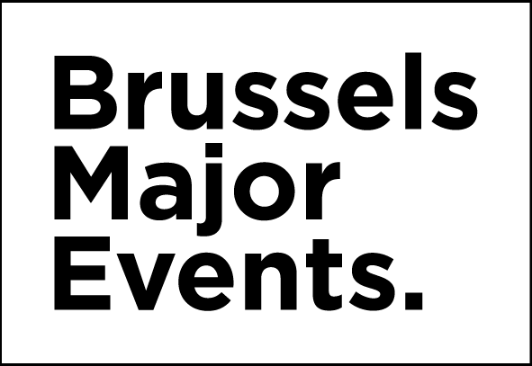

↓ Tirer pour actualiser

⟁ Dashboard — Bruxelles
↻
DOC
--:--:--
DARK
03 · LIVE CAM BRUXELLES
Grand Place / De Brouckère
Grand Place
Flux vidéo indisponible.
Ouvrir le flux directement
De Brouckère
Flux vidéo indisponible.
Ouvrir le flux directement
📋
Bulletin météo
Prévisions texte · IRM / mymeteo.be
OUVRIR →
🗺️
INCA
Carte météo · mymeteo.be
OUVRIR →
02 · ANÉMOMÈTRES
CHARGEMENT…
01 · HISTORIQUE : VITESSE MAX.
VIT. MAX.
◂
2 heures
▸